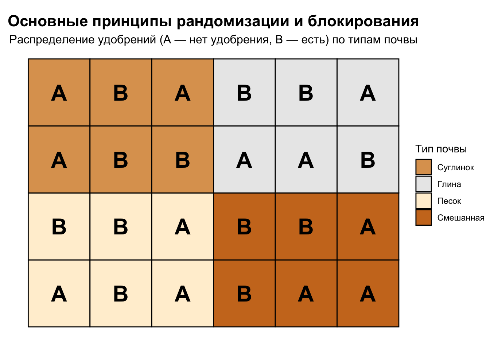

Какой A/B тест можно назвать самым первым в истории? Точно сказать сложно — люди всегда сравнивали варианты, чтобы выбрать лучший. Но если искать истоки, то путь этого метода начинается в медицине, задолго до появления термина “A/B”. И поэтому история A/B тестирования будет довольно сильно пересекаться с историей медицины и рандомизированных клинических исследований (РКИ).
1747: Джеймс Линд и лимоны против цинги
Наиболее раннее задокументированное контролируемое исследование было проведено шотландским врачом Джеймсом Линдом в 1747 году. На корабле HMS Salisbury он лечил моряков с цингой, разделив 12 человек на шесть пар. Каждая пара получала разное лечение: яблочный сидр, уксус, морскую воду, цитрусовые и другие средства. Те, кто ел лимоны и апельсины, выздоровели за шесть дней. Это считается одним из первых контролируемым экспериментов, хотя распределение на группы не было случайным, а в каждой выборке было всего два человека. Тем не менее, этот опыт стал предшественником современных РКИ.
Забавный факт
Группа с цитрусовыми получала апельсины и лимоны всего шесть дней — не потому, что такая длительность была запланирована, а просто из-за того, что на корабле закончились фрукты. Тем не менее, этого оказалось достаточно, чтобы состояние моряков заметно улучшилось.
1835: Нюрнбергский тест соли и гомеопатия
В 1835 году в Нюрнберге проверили состоятельность гомеопатии как метода. Гомеопат Иоганн Якоб Ройтер утверждал, что соль в C30-разведении (10⁻⁶⁰) вызовет ‘необычные ощущения’ (нем. außerordentliche Empfindungen), особенно у больных. Врачи собрали 100 добровольцев, подготовили 100 флаконов — 50 с дистиллированной водой, 50 с гомеопатической солью, — распределив их случайным образом и втайне от участников и исследователей. Через три недели 50 участников отчитались: 8 почувствовали что-то необычное (5 из ‘солевой’ группы, 3 из контрольной), но разница оказалась статистически незначимой. Организаторы объявили гомеопатию несостоятельной, а тест стал первым рандомизированным двойным слепым испытанием и одним из предшественников A/B тестов, хотя современные A/B обычно не используют двойную слепоту.
Комментарий
Из 100 участников только 54 участника вернулись с отчетом о своем состоянии, но учли только 50 (27 с солью, 23 с водой): четыре человека исключены из-за нарушений протокола, что объясняет меньшее число отчитавшихся.
Критики эксперимента отмечали, что его результаты нельзя считать убедительными доказательствами против гомеопатии, так как большинство добровольцев были здоровыми, тогда как гомеопаты, включая Ройтера, утверждали, что их методы эффективны именно для лечения больных.
1840-е: Игнац Земмельвейс и спасение матерей
В 1846 году венгерский врач Игнац Земмельвейс работал в Венской больнице и заметил пугающую закономерность: в одном родильном отделении женщины умирали от родильной горячки в разы чаще, чем в другом. Он сравнил два отделения: в первом рожениц принимали врачи, во втором — акушерки. Земмельвейс предположил, что врачи, приходившие со вскрытий в анатомическом отделении, заносят инфекцию. В 1847 году он начал эксперимент: заставил врачей мыть руки хлорным раствором перед родами. Смертность упала с пиковых 18% до 1-2% в течение месяцев. Он сравнивал смертность до и после вмешательства в одном отделении, используя другое как неформальный контроль, что предшествовало A/B тестированию и напоминало метод Diff-in-Diff (разница в разностях), хотя без рандомизации и строгой статистики.
1920-е: Рональд Фишер и сельское хозяйство
Настоящий переворот в методологии экспериментов произошел в XX веке благодаря британскому статистику и биологу-эволюционисту Рональду Фишеру. В 1920-х годах, работая на сельскохозяйственной станции Rothamsted в Англии, он заложил основы современного экспериментального дизайна: сформулировал и систематизировал три ключевых принципа: рандомизацию, репликацию и блокирование. Сравнивая урожайность полей — например, пшеницы с разными удобрениями, — Фишер понял, что случайное распределение участков на группы (рандомизация) исключает “шум”, такой как различия в почве или погоде, делая выводы более надёжными. Для повышения точности он ввёл репликацию — повторение эксперимента на нескольких участках, что позволяло отличить случайные колебания от реального эффекта. А для учёта известных переменных, таких как тип почвы или уклон поля, он разработал блокирование — разделение участков на группы с похожими условиями, внутри которых и проводился тест. Эти идеи, впервые изложенные в статье “The Arrangement of Field Experiments” (1926) и окончательно оформленные в книге “The Design of Experiments” (1935), перекочевали из сельского хозяйства в медицину, став фундаментом современных клинических испытаний, а затем и A/B тестов.
На картинке выше показаны принципы рандомизации и блокирования, но может показаться, что тип почвы — основной фактор обработки (fixed effect). На самом деле в данном дизайне почва выступает как блокирующий фактор (blocking factor), влияние которого мы учитываем, чтобы изолировать эффект удобрений.
Конец XIX – начало XX века: Маркетинг и почтовые рассылки
Идея сравнения вариантов вышла за пределы медицины в маркетинг. В конце XIX века, с ростом прямой почтовой рекламы (direct mail), компании начали тестировать эффективность объявлений. Например, в США в 1870-х годах каталог Montgomery Ward рассылал разные версии писем клиентам, сравнивая отклик. К началу XX века рекламные агентства, такие как Lord & Thomas (предшественник Foote, Cone & Belding), систематизировали этот подход: отправляли две версии каталога или письма (A и B) разным группам и измеряли продажи. Распределение не всегда было случайным, но это стало прообразом A/B тестирования в бизнесе, где выбор лучшего варианта опирался на цифры, а не интуицию.
1990-е – 2000-е: Google и цифровая эпоха
С приходом интернета A/B тестирование шагнуло в бизнес. В 2009 году Google провёл легендарный эксперимент: инженеры протестировали 41 оттенок синего для ссылок в поисковике. Даже малозаметная разница в цвете, по их оценкам, принесла миллионы долларов. Однако этот кейс вызывает вопросы: многие оттенки могли быть неразличимы на разных мониторах из-за настроек цвета или качества экранов, что ставит под сомнение чистоту эксперимента. Подробнее об этом можно прочитать в статье. Тем не менее, пример Google показал, как A/B тестирование адаптировалось к новым задачам, далеко уйдя от своих медицинских корней.
Этот эксперимент не был первым A/B тестом в современном бизнес-контексте — за первенство спорят Amazon и Microsoft, — но стал одним из самых известных. Подробнее тесты Amazon и других компаний рассмотрим в одном из следующих постов.
Сегодня: от кнопок до алгоритмов
Сегодня A/B тестирование — неотъемлемая часть IT и маркетинга. Проверяют всё: от заголовков в приложениях до тонких настроек алгоритмов рекомендаций. Современные платформы позволяют автоматизировать процесс — от запуска тестов до подведения итогов, делая его быстрым и удобным (но все равно нередко приходится подводить итоги вручную). Аналитики и продакт-менеджеры порой забывают: их модные A/B тесты — это, по сути, упрощённая версия рандомизированных клинических исследований. Метод уходит корнями к пионерам вроде Линда и Фишера, и важно помнить, кто заложил его основы, пока мы красим кнопки и сравниваем результаты.